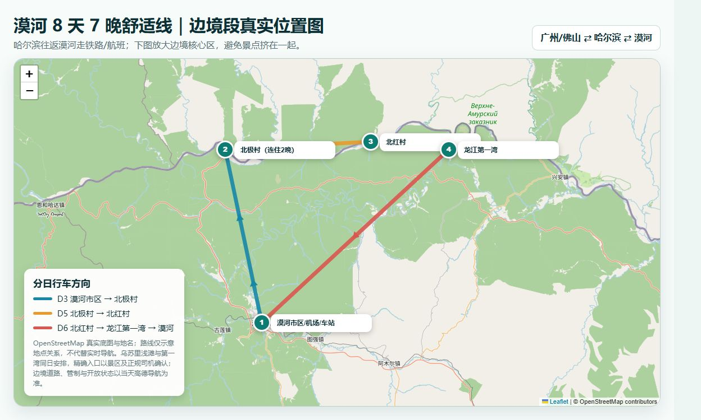
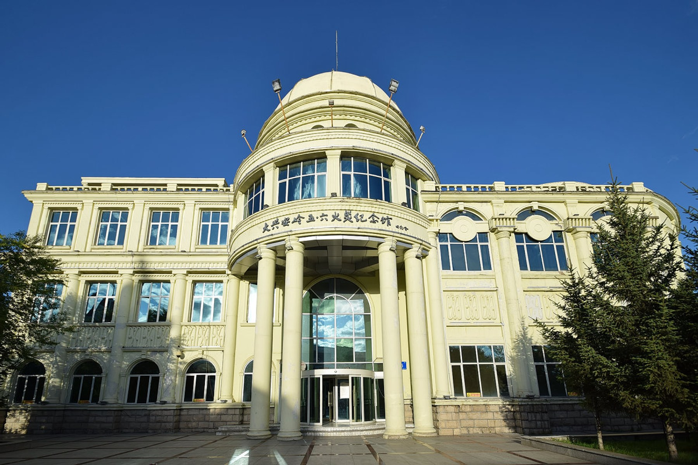
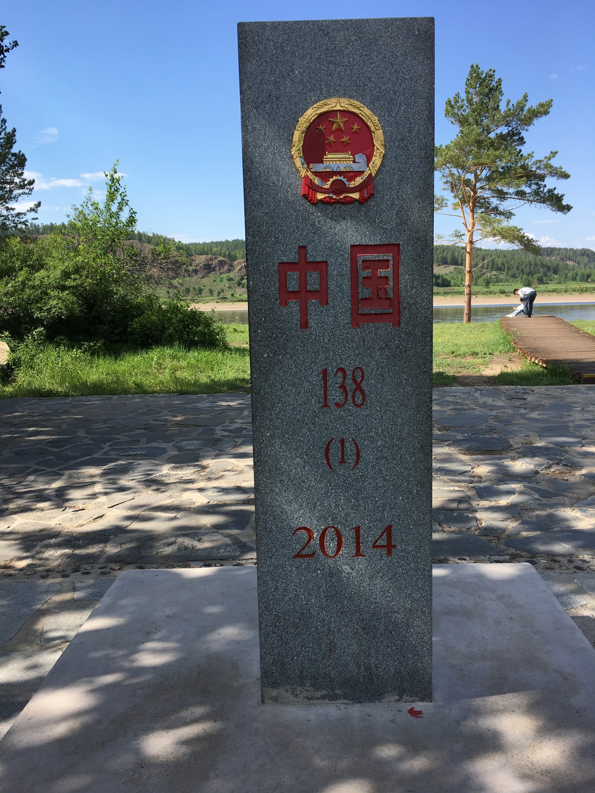
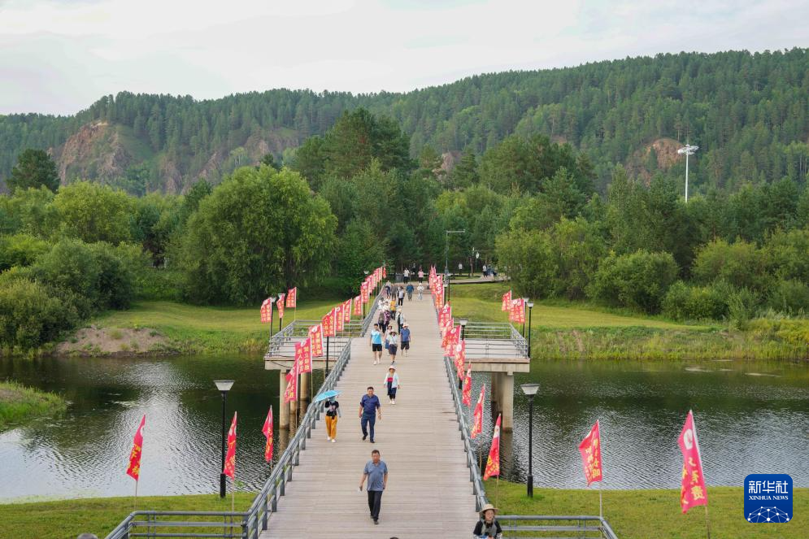
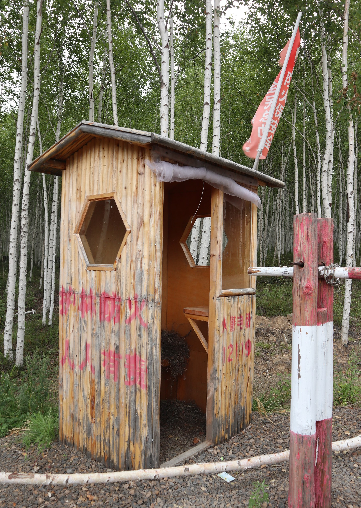
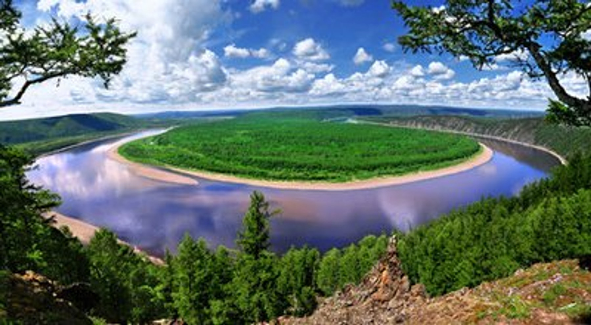

主推荐景色不打折
8天7晚才是这条线的舒适完整形态
哈尔滨前后各留缓冲，北极村连住2晚，北红村单住1晚，龙江第一湾和乌苏里浅滩独立成日。长车程后有休息，不用凌晨到店或同日强接返程。
广州/佛山 → 哈尔滨缓冲 → 夜间软卧到漠河 → 北极村2晚 → 北红村 → 龙江第一湾/乌苏里浅滩 → 漠河市区 → 哈尔滨缓冲 → 返程
旅行理念：把极北边境、黑龙江河岸和林区村落看完整；不赌无保证的极光，不把高台阶当必做，也不拿同日跨省转机考验体力。
哈尔滨前后各留缓冲，北极村连住2晚，北红村单住1晚，龙江第一湾和乌苏里浅滩独立成日。长车程后有休息，不用凌晨到店或同日强接返程。
夏季主角是长白昼、森林、黑龙江河岸和边境村落；极光受太阳活动、云量和光害影响，不能保证。龙江第一湾高处观景台台阶多，体力一般就走低强度替代。

路线：广州/佛山→哈尔滨
今晚：已购夜车的出发站圈
关键：不硬逛，先睡好
路线：哈尔滨轻逛→软卧
今晚：哈尔滨→漠河软卧
关键：提前90分钟到站
路线：漠河站→北极村
今晚：北极村第1晚/共2晚
关键：只做河岸轻逛
路线：村内地标+江畔
今晚：北极村第2晚/共2晚
关键：避开正午暴晒
路线：北极村→北红村
今晚：北红村1晚
关键：天黑前入住
路线：浅滩/第一湾→漠河
今晚：漠河市区1晚
关键：高台阶可删
路线：漠河→哈尔滨
今晚：哈尔滨机场/市区
关键：不强接广州
路线：哈尔滨→广州/佛山
今晚：正常到家
关键：只保返程
路线：广州→哈尔滨→软卧
今晚：哈尔滨→漠河车上
关键：行李直奔车站
路线：漠河站→北极村
今晚：北极村1晚
关键：只走核心点
路线：北极村→北红村
今晚：北红村1晚
关键：减少村内补漏
路线：第一湾/浅滩→漠河
今晚：漠河市区1晚
关键：高台阶可删
路线：漠河→哈尔滨
今晚：哈尔滨1晚
关键：只做返程缓冲
路线：哈尔滨→广州/佛山
今晚：正常到家
关键：不补重景点
今晚住：已购夜车的出发站1公里圈
睡前：查D2软卧、退房和寄存
明天：白天缓冲，晚间上车
今晚住：哈尔滨→漠河车上
必带：身份证、眼罩、耳塞、水
睡前：联系D3接站司机
今晚住：北极村第1晚
重点：入住、江畔、极北地标
原则：晚到就不补景点
今晚住：北极村第2晚
重点：村内慢走、河岸晚霞
睡前：确认D5车牌与接人时间
今晚住：北红村
重点：木屋村落、江岸、林区
原则：天黑前到店
今晚住：漠河市区
重点：浅滩、第一湾
原则：高台阶不舒服就删
今晚住：机场或返程便利圈
重点：只保漠河→哈尔滨
原则：航班取消立即改签
今晚住：正常不住
重点：哈尔滨→广州/佛山
原则：提前2小时到机场
今晚住：哈尔滨→漠河车上
重点：落地直奔车站
风险：航班晚点会断链
今晚住：北极村
重点：河岸与极北地标
原则：只走核心
今晚住：北红村
重点：村落和林区
睡前：确认第一湾开放
今晚住：漠河市区
重点：浅滩/第一湾
原则：体力差删高台阶
今晚住：哈尔滨
重点：只保航班和入住
原则：不跨城硬接
今晚住：正常不住
重点：返广州/佛山
原则：不补重景点
| 项目 | 何时查 | 核对渠道 | 当前可用参考 | 没票/未开放怎么办 |
|---|---|---|---|---|
| 广州/佛山→哈尔滨航班 | 先看出发日，出票后每天看变动 | 航司官网/官方App、正规OTA | 动态价格，不写死；预算按两人3500—6000元往返舒适区间 | 换同日早班或前一晚到；不要牺牲D2软卧衔接 |
| 哈尔滨→漠河软卧 | 按12306当期预售规则开放即查 | 铁路12306 | 2026-07-16样本：K7039/K7041软卧398.5—409.5元/人，非固定车次 | 候补+同日其他卧铺；仍无票则飞漠河，不买不明代购 |
| 北极村门票 | 旺季提前1—3天核对 | 漠河市政府/景区官方页面、官方售票入口或现场窗口 | 现行政府批复为88元/成人；优惠证件按当期规则 | 若限流，先保住宿与合法入园时段，不走非正规入口 |
| 龙江第一湾/乌苏里浅滩 | D5晚和D6出发前再次确认 | 景区公告、官方热线0457-8966999转咨询或第一湾13504565518 | 门票、接驳及高台阶开放状态未固定写死 | 道路/景点关闭就改低强度河岸、林区合法停靠点或直接回漠河 |
| D3-D6正规包车/小团 | 旺季提前3—7天，最迟提前48小时 | 正规OTA订单、持照旅行社、酒店前台可核验供应商 | 两人舒适预算2800—4500元，必须以书面报价为准 | 只选有订单凭证和取消规则的替代；不临时坐无证揽客车 |
| 漠河→哈尔滨航班 | 与返穗航班一起出票 | 航司官方/正规OTA | 班次和价格季节性强；D7只飞哈尔滨，不同日强接广州 | 取消则改软卧并把返穗顺延，舒适版不凌晨硬转 |
边境证件：中国内地游客默认携带身份证原件，但页面不擅自承诺“无需边防证”。若进入当期特殊管控区域、使用非内地证件或带无人机，必须提前向景区、住宿方和边境管理部门确认。
住1晚。按D2实际出发站选圈，不盲住中央大街。
住车上1晚。优先软卧；上车前洗漱、补水、充电。
连住2晚。景区主街/核心地标步行圈，避免每天拖行李。
住1晚。主路附近，先确认独卫、热水和防蚊条件。
住1晚。车站/机场接送方便，长车后吃饭休息。
住1晚。次日早班住机场圈；午后航班可住市区交通圈。
飞机落地后直接转车站，取消哈尔滨首晚缓冲。
只住1晚；下午抵达后只走核心河岸和地标。
住1晚；减少北极村补漏时间，午前转场。
住1晚；第一湾长车日后就近休息。
住1晚；保留返程容错，不同日硬接广州。

今日一句话：这一天只负责从华南到东北，把第二天软卧衔接准备好。
建议航班：优先选择18:00前落地哈尔滨的班次；太晚就不要夜逛。
住宿逻辑：先买D2火车，再按“哈尔滨站/哈尔滨东站”实际出发站订1公里圈酒店。
佛山出发去广州白云机场；国内航班预留约2小时办理手续。
广州白云飞哈尔滨太平；航班时刻以出票为准。
机场巴士/网约车到已确认的火车出发站住宿圈，先入住再吃饭。
核对软卧订单、D3接站司机、北极村酒店地址，早点睡。
今日一句话：白天只安排一段轻松城市散步，晚上提前到站，不背着行李跑景点。
可选轻逛：圣索菲亚教堂外观—中央大街短走；不想走就酒店休息。
当前样本：2026-07-16公开查询显示K7039/K7041有不同出发站与到达时段，正式车次以12306订单为准。
自然起床、早餐、寄存行李。
轻逛或回酒店午休；不安排远郊景点。
取行李、吃晚饭、购买车上水和早餐。
到正确车站安检候车；上车后联系D3司机确认到站时间。
身份证、12306订单、眼罩、耳塞、充电宝、水、纸巾、薄外套、简单早餐。

今日一句话：正规司机接站后直达北极村，下午只走地标与江畔，不补满清单。
官方距离：北极村距漠河市区约77公里；具体车程受道路、天气和停靠影响。
入住：北极村主街/核心地标步行圈，第1晚/共2晚。
联系司机，确认出站口、车牌和行李数量。
实名核对司机与订单，漠河站/机场直接去北极村。
吃热食、午休；下午走“中国漠河”极北地标和黑龙江江畔。
根据天气看长白昼河岸，感觉冷或困就回店。

今日一句话：上午避开人流走地标，正午回酒店休息，傍晚再看河岸长白昼。
内部顺序：村内主街 → 极北地标/北极广场 → 黑龙江江畔栈道 → 邮局外观等当日开放点。
不做：不为了“最北”两个字来回乘车打卡重复景观。
主街、地标和江畔短线；跟随景区开放指引。
午饭、回酒店午休、补防晒和驱蚊。
补河岸栈道、村落慢走；控制步数。
晚霞/长白昼；不熬夜等没有保证的极光。
身份证、门票信息、驱蚊液、薄长袖、防晒、帽子、水、充电宝、雨具。

今日一句话：上午在北极村睡够再退房，午后转北红村，天黑前完成入住。
图片说明：此图为漠河林区木构建筑氛围参考，不冒充北红村具体民宿或地标。
体验重点：村路、木屋、林区和江岸安静感，不追网红摆拍。
北极村早餐、补漏或休息。
退房，确认司机、路线、午餐点和预计抵达时间。
转场北红村；只在合法、安全停靠点下车看林景。
入住、吃饭、村内短走；不走陌生林地和边境小路。

今日一句话：这是唯一长车日；先按道路开放走浅滩/边境点，再去第一湾，傍晚回漠河。
低强度默认：龙江第一湾高观景台台阶多，只在身体、天气、开放均合适时上；否则看低处河岸/合法观景点。
关键：不为日落走太晚夜路。
早餐、退房；再次确认道路、景区和边境管制。
按正规司机安排前往乌苏里浅滩方向；精确入口以当日导航和公告为准。
龙江第一湾。默认低处/短线；高台阶最多作为临时可选支线。
返漠河市区入住、洗澡、吃热饭、整理返程行李。
身份证、驱蚊、防风外套、雨具、帽子、水、轻食、晕车药、充电宝、舒服鞋。
今日一句话：优先乘合适航班回哈尔滨；有余量才在漠河市区短逛。
可选：北极星广场/五六火灾纪念馆，必须先核当日开放时间。
住宿：D8早班住机场圈；D8午后航班可住交通方便的市区。
退房、前往漠河机场；小机场也不建议卡点。
漠河飞哈尔滨；以航司实际班次执行。
入住D8返程便利圈，吃饭、洗衣、整理行李。
今日一句话：只保返程，不在离开前硬塞远景点。
时间：国内航班建议提前约2小时到机场；市区去太平机场再留道路余量。
酒店退房、检查证件和行李，按交通方式出发。
到哈尔滨太平机场办理手续。
按实际到达时间选择地铁/城际/网约车回佛山。
执行：只选比夜车早至少5小时落地哈尔滨的航班；托运行李、机场进城和晚点都要留余量。落地后直接去正确火车站，不安排哈尔滨游览。
断链动作：预计赶不上软卧就立刻改签，不跨站狂奔；必要时住哈尔滨并把全程顺延。
司机接站直达北极村；晚到只入住。体力允许时走“中国漠河”地标、北极广场和江畔短线。
08:30—10:30补北极村核心；11:00前退房转北红村。取消重复商业打卡，天黑前入住。
按D6舒适版同样安全标准执行，但停留更短；道路差、下雨或体力弱时直接删高观景台，傍晚前回漠河。
优先白天航班回哈尔滨，抵达后住D6返程便利圈。航班取消则改签/改卧铺，不能硬保原D6。
提前约2小时到哈尔滨太平机场，不在返程日上午安排远景点。
询价时一次说清：D3漠河站接→北极村；D5北极村→北红村；D6北红村→乌苏里浅滩/龙江第一湾→漠河市区。询问两人总价、车型、保险、油路停、司机食宿、门票、是否走夜路、封路如何改线和订单凭证。
入园前：身份证、购票信息、酒店地址、驱蚊、防晒、薄外套、水和充电宝。边境景区按现场要求配合检查。
必看：黑龙江河岸、极北地标、边境村落氛围。可删：重复命名的“最北”商业打卡点。
厕所/休息：优先使用游客中心、酒店和主街公共设施；偏远河岸先问清最近设施。出景区：D5由酒店门口或约定主路点接去北红村。
入村前：确认住宿、晚餐、热水、手机信号和次日接车时间。图片为漠河林区木构氛围，不作具体北红村定位证据。
必看：村落尺度、木屋与林区边境感。可删：偏远河滩、无标识林道和任何要求私下收费的临时点。
出村：D6由同一正规车辆接走，前一晚拿到车牌和准确时间。
出发前：身份证、防风外套、雨具、驱蚊、防晒、水、轻食、晕车药、充电宝。先问道路、森林防火与边境管制。
必看：黑龙江大弯、森林与边境尺度。可删：高观景台全部台阶。低强度替代：开放的低处河岸、短栈道或司机确认的合法观景点；不承诺电梯。
下雨/封路：不绕行陌生道路，取消景点后直接回漠河。厕所/补给：偏远段稀少，出发前解决并在正规服务点补给。
身份证：全程随身并配合检查。拍照：只在明确开放点按现场指引拍摄；不跨越围栏、界线和警示标志，不拍执勤与敏感设施。
无人机：页面默认“不带也不飞”。若确实携带，必须在出发前向景区和当地边境管理部门确认是否允许、在哪飞、需何种手续；没有明确许可就不开机。
同行非内地证件：必须提前向景区和住宿方确认接待、可进入范围和证件要求，不能到现场再赌。
可删：全部市区点。返程航班、休息和用餐优先级更高。
住火车站圈就近找饺子、面食、锅包肉/东北菜小份。夜车前避免太油、酒精和生冷。
农家菜、炖菜、面食和早餐优先；江鱼只选正规餐馆、明码标价与合法食材。
提前让住宿方确认晚餐和早餐，不到饭点再临时找；问清人均、菜量与支付方式。
早餐吃饱，车上带水、面包、巧克力/能量棒和纸巾；午餐跟司机确认正规补给点。
回城后优先热汤面、饺子、家常菜，补蔬菜和水，不用第一晚就吃很重。
不点无标价“野味”、不买来源不明野生动物制品、不接受司机临时强制带店消费。
身份证、航班、12306、酒店、正规用车订单、景区购票信息、司机联系方式；关键页面离线截图。
驱蚊液、长袖长裤、袜子、防叮咬药膏；河岸、草地和傍晚不裸露久停。住宿确认纱窗。
遮光眼罩、耳塞；即使21点后仍亮，也按正常时间休息，不连续熬夜等极光。
薄防风外套、轻雨衣/折叠伞、防晒、帽子、墨镜、快干衣物和舒服防滑鞋。
晕车药、水、轻食、纸巾、充电宝、备用线和离线地图。充电宝按民航/铁路当期规则随身携带。
不在林区吸烟或用火，不携带火种进入限制区域；服从森林防火检查与临时封控。
| 项目 | 两人舒适区间 | 怎么算 | 控制方式 |
|---|---|---|---|
| 广州—哈尔滨往返机票 | 3500—6000元 | 两人往返动态区间 | 优先合适时刻，不为低价选凌晨极限转场 |
| 哈尔滨→漠河软卧 | 800—820元 | 样本398.5—409.5元/人×2 | 以12306付款页为准 |
| 漠河→哈尔滨航班 | 1000—2600元 | 两人动态估算 | D7独立飞，不同日强接广州 |
| D3-D6正规包车/小团 | 2800—4500元 | 两人总价，车型和包含项影响大 | 至少比3家书面报价 |
| 住宿 | 3000—5400元 | 哈尔滨2晚+北极村2晚+北红村1晚+漠河1晚 | 真实OTA核价待出发前补充 |
| 门票/景区接驳 | 600—1200元 | 北极村两人176元已知，其余留动态余量 | 不买不明套票 |
| 餐饮 | 1600—2400元 | 两人8天，含长车补给 | 边境村落先问价 |
| 市内交通 | 300—700元 | 机场/车站接驳 | 按酒店位置选择 |
| 应急备用 | 900—1200元 | 晚点、改签、药品与临时补给 | 不要挪作普通消费 |
| 项目 | 两人区间 | 备注 |
|---|---|---|
| 广州—哈尔滨往返 | 3500—6000元 | 仍按舒适时刻，不买极限红眼 |
| 哈尔滨→漠河软卧 | 800—820元 | 样本价格，以12306为准 |
| 漠河→哈尔滨航班 | 1000—2600元 | D5独立飞回 |
| 本地正规用车 | 2300—3800元 | 路线未减少太多，不能按天数等比例砍 |
| 4晚酒店 | 2000—3500元 | 北极村1+北红村1+漠河1+哈尔滨1 |
| 门票/餐饮/市内/备用 | 2800—4580元 | 按实际开放与消费 |
预算不是承诺价。航班、软卧、酒店、用车和景区价格会变化；本页明确区间与核对时间，出发前以航司、12306、OTA付款页、景区官方和正规旅行社合同为准。
方案A只取消哈尔滨轻逛，D2夜车通常仍有一整天缓冲；到店后把新时间发酒店。方案B若可能赶不上当晚软卧，立刻改签火车并顺延，不跨站冲刺。
先在12306候补同日其他卧铺与相邻车次；仍无票时比较飞漠河。只从官方渠道付款，不接受“内部票”或私下加价。
把12306实时到站截图发司机和北极村酒店；D3取消所有沿途停靠，只接站、入住、吃饭。北极村有2晚，不需要硬补。
先联系平台/旅行社按订单处理；核对替代司机姓名、电话、车牌、保险和总价。没有凭证的临时车不坐，必要时住漠河/北极村等待正规替代。
服从封控，取消乌苏里浅滩/第一湾，不走乡道绕行。D6改漠河市区五六火灾纪念馆（开放时）+休息；用车按书面取消规则处理。
直接启用低强度版：只走开放低处河岸/短线观景点，不登高。没有合适替代就删掉，不用为一张俯瞰照透支膝盖。
穿长袖长裤、补驱蚊与防晒，缩短河岸草地停留；回酒店冷敷/补水。极昼睡不好时戴眼罩，D4上午延后，取消晚间活动。
出发前把司机、酒店、平台客服、路线和订单离线截图；车上带充满的合规充电宝。失联时留在约定地点，不自行走入林区找信号。
先由航司改签；若当天无合适航班，改夜间卧铺并把返穗顺延到D9。舒适版的原则是保安全和闭环，不用D8原机票逼迫夜间奔波。
不做任何补偿性熬夜或追车。夏季主体验本来就是长白昼、黑龙江河岸、森林与边境村落；极光从未计入必看清单。